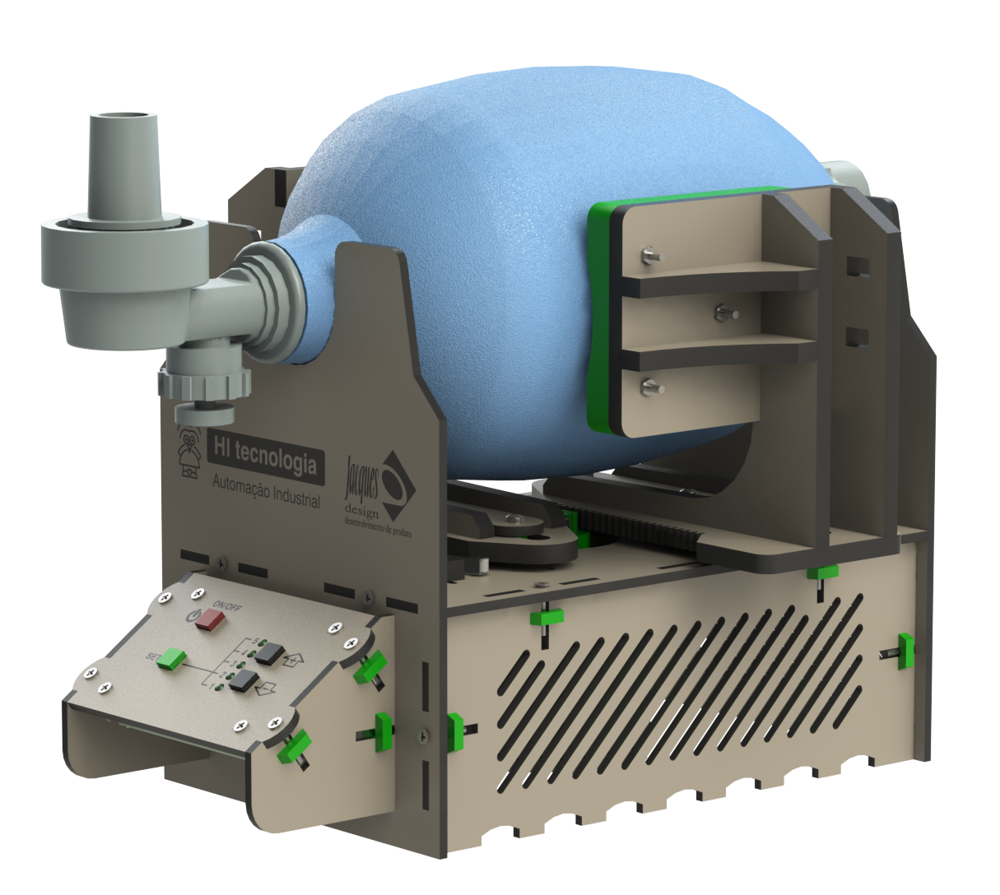
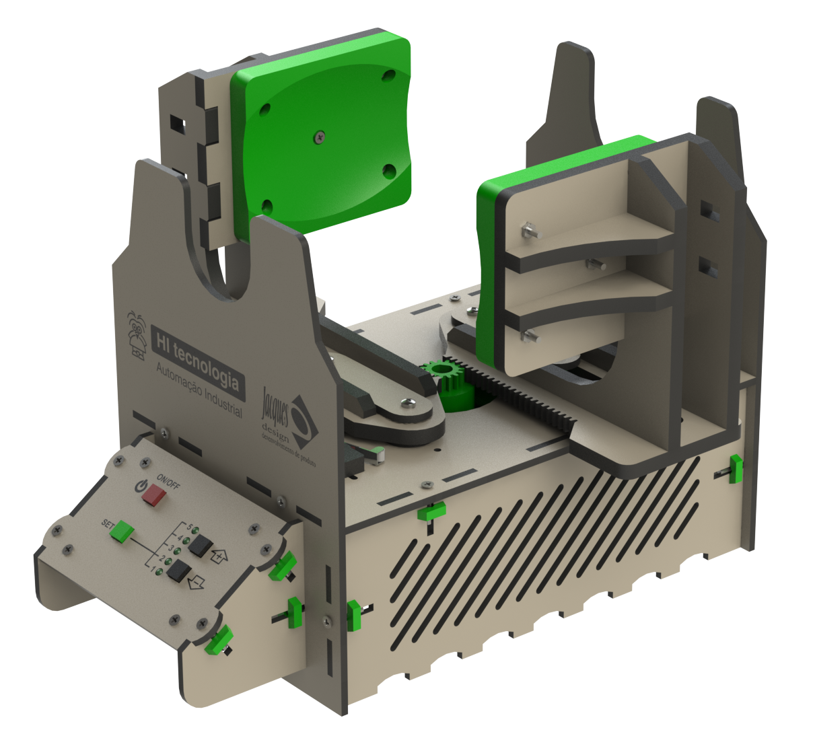

Portugues | English



Ventilador pulmonar projetado pela equipe de engenharia da HI Tecnologia e da Jacques Design, com o objetivo de auxiliar no combate a pandemia do vírus corona.
Nosso objetivo foi criar um ventilador pulmonar simples, barato (custo estimado inferior a R$400,00) e que possa ser reproduzido em escala, por quem tiver disponibilidade, de forma a auxiliar no tratamento dos enfermos do COVID-19.
Deve ser observado que, apesar de atuarmos nos setor de automação industrial por vários anos e termos obtido alguma orientação e ajuda de profissionais de saúde, não temos expertise em equipamentos médicos e portanto, podem ser necessárias funcionalidades ou ajustes no projeto corrente. Ajuda neste sentido é bem vinda.
Toda documentação e o repositório deste projeto podem ser usados sem restrições. O projeto não esta integralmente concluído e continuamos trabalhando neste processo. Enquanto houverem pessoas interessadas neste projeto nossa equipe de engenharia estará dando suporte ao mesmo de forma gratuita.
Nosso único objetivo com este trabalho é contribuir para minimizar a perda de vidas com esta epidemia.
Os nossos mais sinceros agradecimentos a todas as pessoas que tem nos auxiliado neste processo.
Este trabalho se iniciou em 23/03/2020, e a versão inicial do projeto mecânico disponibilizada, reflete o 6o protótipo desenvolvido.
HI Tecnologia
Jacques Design